Research and Generalization on the Planar Circular Restricted Three-Body Problem
Chenglin Cai
Abstract
The coplanar circular restricted three-body problem has important applications in the study of celestial bodies in the solar system and the design of space telescope orbits, among which the five Lagrangian equilibrium points are the most important in research and application. We first study the stability of the Lagrangian equilibrium points of the coplanar circular restricted three-body problem and determine the stability conditions and orbit adjustment strategies. An own-developed numerical integrator was used to simulate three-body motion; a state-modification algorithm was developed to station-keep the satellite in orbit (increase stability and prevent it from flying away) and to simultaneously fix errors in conserved properties; novel iterative experiments were conducted to explore the impact of the mass ratio of the two dominant bodies as well as the impact of the initial displacement and velocity perturbation of the third body on orbital stability near Lagrange points. Our simulation concludes that the stability of unstable Lagrange point orbits increases as the mass ratio increases, decreases as initial disturbance increases, and can be enhanced by effective station-keeping operations.
Then, we further study the generalization of the coplanar circular restricted three-body problem. Under the condition that the third celestial body does not affect the movement of the other two celestial bodies, the motion of the third celestial body is studied after breaking the “coplanar” and “circular” constraints by introducing the inclination angle and eccentricity of orbits. Here, we use MERCURY, a widely-used N-body numerical integrator in astrophysics to study the orbital variability of planets in binary systems, such as Pandora planet in the famous film Avatar. As the planetary orbital eccentricities and inclinations increase, the planetary orbits show faster-changing oscillation over a period of thousands of years. For these planets in binary systems, climate change is too dramatic for the development of intelligent beings. The results help us to understand the potential habitable zones for intelligent beings in the Universe.
Keywords: N-body Dynamics, Numerical Simulations, Exoplanets, Habitable Zone
Contents
2. Theory for Circular Restricted Three-Body Problem 7
2.1. Representation and Choice of Unit 7
2.2. Lagrange Points and Three-body Equation of Motion 8
2.3. Stability of Lagrange Points 10
3. Methodology and Construction of CR3BP Numerical Integrator 11
3.1. Potential Field and Satellite Trajectory in Rotating Frame: Method 11
3.2. Circular Restricted Three-body Motion in Static Frame: Method 13
3.3. Error Analysis on Conservation Properties: Method 14
3.4. Effective Station-Keeping through State-Modification: Method 15
3.5. Orbital Stability Simulation over Time: Method 16
3.6. Orbital Stability vs. Mass Ratio 16
3.7. Orbital Stability vs. Initial Disturbance 16
4. Results of Circular Restricted Three Body Problem Study 17
4.1. Potential Field and Satellite Trajectory in Rotating Frame: Result 17
4.2. Circular Restricted Three-body Motion in Static Frame: Result 19
4.3. Error Analysis on Conservation Properties: Results 20
4.4. Effective Station-Keeping through State-Modification: Results 23
4.5. Orbital Stability Simulation over Time: Results 25
4.6. Orbital Stability and Mass Ratio: Results 28
4.7. Orbital Stability and Initial Disturbance: Results 30
5. Discussion on the Stability of Lagrange points 31
6.1. From “Circular” to “Elliptical” 35
6.2. From “Coplanar” to “Non-coplanar” 38
6.3. Interaction between Eccentricity and Inclination Angle 40
7. Discussion on Habitable Planets in Binary Systems 42
The two-body problem is a well-known physical problem that describes the periodic motion of two bodies around their center of mass and is easily solvable in elementary physics textbooks. However, adding to the system a third mass greatly complicates this model into a three-body problem [1]. The general three-body problem that describes the motion of any three objects freely in 3-dimensional space solely under the gravitational attraction by each other has no closed-form solution and is chaotic, whereas its particular case, the coplanar circular restricted three-body problem, has specific solutions [2].
The coplanar circular restricted three-body problem is described by Newtonian equations of the periodic and non-chaotic motions of three objects, two with dominant mass and one with negligible mass, in coplanar circular orbits around their center of mass [3].
In a circular restricted three-body system, there are five special positions where objects on it co-rotate in the same angular frequency with the two dominant bodies around the center of mass, which are named the Lagrange points and have labels L1, L2, L3, L4, and L5 [4]. As Figure 1.1 shows, the first three Lagrange points are collinear with the two dominant bodies, and the latter two form equilateral triangles with the two dominant bodies [5]. A Lagrange point is stable if objects can orbit stably around it, and whereas L4 and L5 are generally stable given sufficient mass-ratio between the dominant bodies, L1, L2, and L3 are not stable, which makes any third body on it tend to wander off under inevitable perturbations [6].
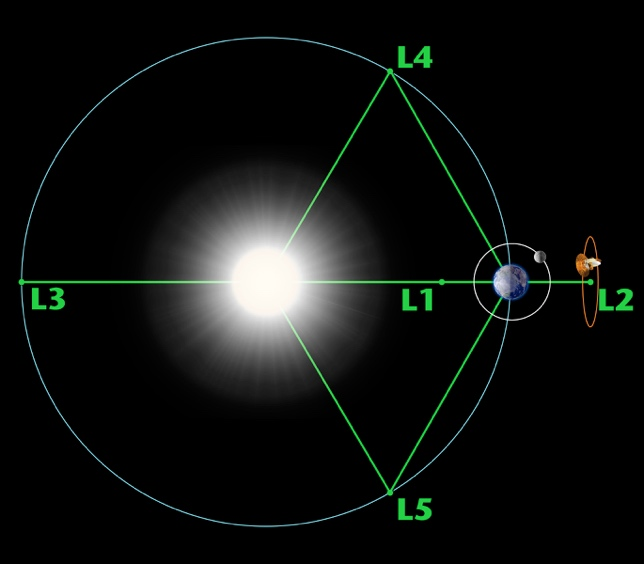
Figure 1.1: Simplified Diagram of Lagrange Points of the Earth-Sun System [7]
The circular restricted three-body problem is one of the most significant problems in dynamic astrophysics because of its application in orbital dynamics, chaos theory, and astrodynamic operations. The Lagrange points are of great applicative significance since their co-rotating nature enables both artificial spacecrafts and natural celestial bodies to orbit on them without additional thrust [8].
For applications in artificial spacecrafts, the Lagrange points are home to a great number of spacecrafts. L1 of the Sun-Earth system is currently the home of SOHO (Solar and Heliospheric Observatory Satellite) which provides consistent observation of the Sun [9], ACD (Advanced Composition Explorer) which analyzes high-energy particle compositions in the solar wind [10], and DSCOVR (Deep Space Climate Observatory) which takes photographs of the sunlit Earth [11]. L2 is currently the home of the Gaia probe which performs high-precision astrometry [12], Spektr-RG which conducts surveys on the galaxies [13], and the newly launched JWST (James Webb Space Telescope) which will extend the study of the formation of the early universe, the evolution of galaxies and dark matter, the early development of stars and planets, and the properties of the solar system [14].
Specifically, the JWST, after 6 months of commission to away from the Earth, arrives and stays around L2 in order to achieve optimal efficiency of data transmission, ease of repair, and effective shielding of sunlight in its -year operating lifetime [15]. However, during its operation, JWST would inevitably wander away from its path due to the inherent instability of L2 that would be magnified not only by perturbation in the solar system such as the accelerative torque and thrust generated by photon striking the sunshield with a maximum effective area but also by unpredictable events such as striking of micrometeoroids that had already occurred [15][16][17]. The modification to the correct path requires thrusters to work with annual given a delta-v budget of [14]. With velocity-modifying station-keeping every days, the JWST will consistently be able to send inspiring data back to Earth, as exemplified by the following test Mid-Infrared Instrument image of the Large Magellanic Cloud with unprecedented resolution [14][18].
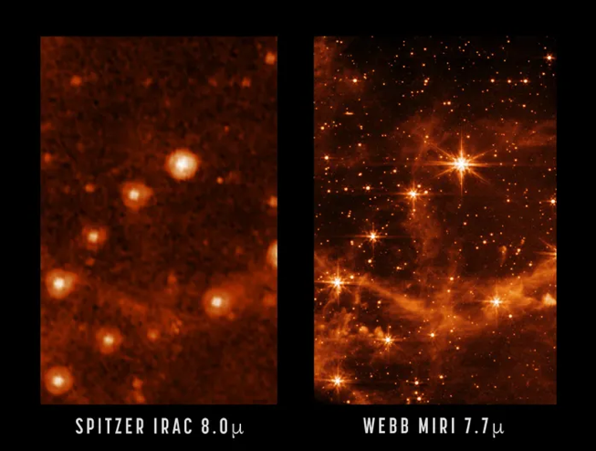
Figure 1.2: Test Image from Webb Space Telescope Mid-Infrared Instrument of the Large Magellanic Cloud in Comparison to Previous Image from Spitzer Space Telescope Infrared Array Camera [18]
For applications in natural celestial bodies, Trojan asteroids share orbits with planets around a star or a moon and co-rotates stably around the leading Lagrange point, L4, and the trailing Lagrange point, L5. For example, the clusters of asteroids at Lagrange points leading and trialing Jupiter - the Greeks and the Trojans respectively as from the Trojan War - are visualized in Figure 1.3, representing a great proportion of the more-than- Trojan asteroids in the solar system [19]. Similarly, concentrations of dust were also found at stable Lagrange points orbiting in the Earth-Moon system [23].
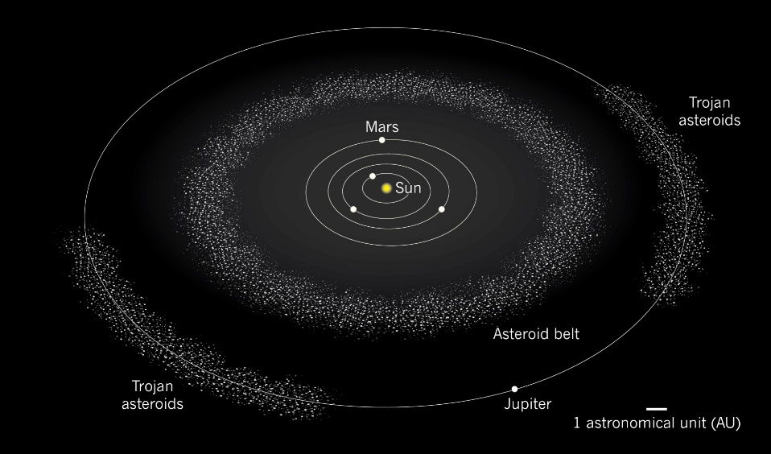
Figure 1.3: Visualization of Jupiter Trojan Asteroids as Evidence of Stability of Lagrange Points
Given the significance of Lagrange points, it is important to develop a detailed model to simulate the coplanar circular restricted three-body problem and to investigate stability-related processes. Past endeavors include modeling of periodicity of satellite (third body) trajectory in the rotating frame [20], the behavior of satellite under a small arbitrary constant initial disturbance [21], and specific station-keeping of the JWST [14]. As for novel contribution, this paper presents simulation in different frames, explores orbital stability as functions of perturbation and of mass ratio of dominant body which was not researched structurally before, and incorporates into the model effective error-eliminating station-keeping that applies to all circular restricted three-body problems.
Specifically, this paper will first construct and implement novel computational models in Python to simulate the coplanar circular restricted three-body problem in both rotating and static frames of reference through numerical integration and verify previous analytical results on the position of Lagrange points. Then, the deviation of the satellite from the expected orbit will be analyzed against the conservation of energy, linear momentum, and angular momentum. Next, the paper will present an updated model that not only simulates effective station-keeping for satellites but also will improve numerical precision. For the last part, the paper will obtain quantitative results on the stability of the Lagrange points and its related factors as well as discusses their mutual interactions.
After researching the coplanar circular restricted three-body problem, this paper extends the analysis by generalizing the three-body problem into elliptical and non-coplanar scenarios. Examples of this include the motion of planets in actual binary star systems. Representing a tremendous portion of all star systems in the entire universe, binary star three-body systems have attracted extensive public interest as exemplified by the planet Pandora in Avatar and the science fiction The Three-body Problem, which both allude to the habitability of planets in binary star systems. Previous study of the habitability of binary star systems primarily focuses on the water composition of the surface of the planets, but this paper points out the importance of orbital stability and variability as factors determining the habitability of planets in binary star three-body systems, whether as a potential destination of human settlement or as a possible home to extraterrestrial intelligent beings. Using the widely-used N-body numerical integrator MERCURY, the impact of eccentricity and inclination angle on the evolution of planetary orbital in generalized three-body systems are simulated, analyzed, and discussed, and our research’s implications on the habitability of exoplanets in terms of climate stability and variability are explained.
This section presents the theory of three-body motion in co-rotating frame and static frame, analytically derives the locations of Lagrange Points by solving zero-potential-gradient points in co-rotating frame, and explains theoretical predictions on third-body orbital stability and its relationship to mass ratio of the dominant bodies as well as to initial perturbation. While this section presents essential theoretical conclusions, a detailed explanation of analytical derivation is included in the Appendix.
Before theoretical derivation, the choice of unit and representation should be specifically chosen in an elegant and normalized manner to simplify computation. First, two conventional parameters are defined to be
(1)
(2)
where is the universal gravitational constant, is the mass of the Sun (the central and most dominant mass), and is the mass of Earth (the second most dominant mass). Then, for computational efficiency, it is set that
(3)
Finally, the Sun-Earth distance is set unit,
(4)
where and are the distance of the Sun and the Earth respectively to the origin.
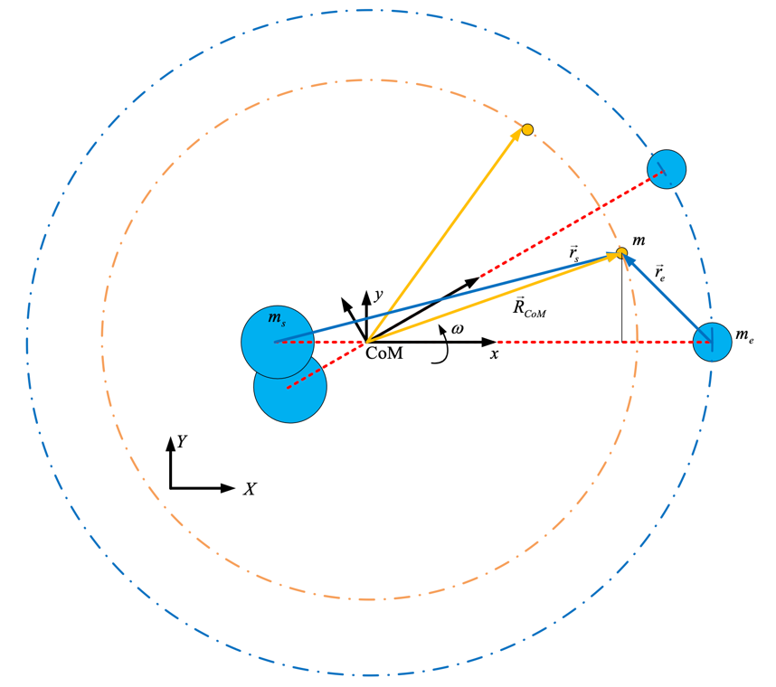
Figure 2.1: Diagram of the Three-body System
The coordinates of the five Lagrange points are easiest to obtain in a rotating frame. To be exact, the origin of the rotating frame should be the center of mass, around which the three bodies orbit concentrically. The angular frequency of the frame should be the same as the bodies, being
(5)
This way, if the third body is on one of the Lagrange points, the three bodies would all be stationary in the rotating frame. The effective potential function in the rotating frame is given by
(6)
where is the coordinate of the object in the -dimensional plane, and and are the distance to the Sun and to the Earth respectively. As demonstrated in the Appendix, by solving for zero-potential-gradient points, the coordinate of the five Lagrange points can be obtained.
(7)
(8)
(9)
(10)
(11)
A combination of Newton's Law of Gravitation and Newton's Second Law in the rotating frame also yields a system of ODE as the equation of motion of the third object in a circular restricted three-body system
(12)
where and are components of the third object's velocity vector in and directions.
On the other hand, the three-body equation of motion in the static frame is more elementary, with each body's acceleration vector equals to the resultant gravitational field strength of the two other bodies, as exemplified by the equations of motion of the third body.
(13)
One central topic in the study of Lagrange points in a three-body system is their stability because the normal operation of spacecrafts around them is dependent on the stability of the points. Orbital stability is defined here as the ability of the satellite to not leave an arbitrary small escape radius in a sufficiently long time given an arbitrary small initial disturbance [21].
The conventional strategy of inspecting the shape of the potential field fails here since the frame is rotating. Despite being potential maxima, L4 and L5 are unexpectedly stable since Coriolis force drives any object falling from the maxima up again. On the other hand, L1, L2, and L3, being saddle points where objects tend to fall off, are dynamically unstable as expected [7].
Therefore, to inspect orbital stability, the equations of motion of satellites around the Lagrange points are linearized, transformed into evolution matrices, and solved [21]. The eigenvalues are then obtained analytically, interpreted in the Appendix, and used to derive the -folding time (the time of a small perturbation to grow e-times larger) of the three unstable Lagrange points orbits:
Table 2.1: e-Folding Time of the Three Unstable Lagrange Point Orbits in Solar System in Normalized and Unnormalized Unit
| Lagrange Point Orbit | -Folding Time | -Folding Time (Normalized Unit) |
|---|---|---|
| L1 | Days | |
| L2 | Days | |
| L3 | Years |
The stability of Lagrange point orbits is dependent on the mass ratio of the two dominant bodies (mass of Sun divided by mass of Earth). For L4 and L5, the orbits should only be stable when the mass ratio satisfies the threshold below.
(14)
where is the mass of the heavier dominant body and is that of the lighter dominant body [21]. When the mass ratio falls below this threshold, the eigenvalue of L4 and L5 orbit is no longer purely imaginary (as shown in the Appendix), causing objects on L4 and L5 to unstably wander off as time progresses.
The research process will include the construction of an original numerical integrator and various tests using it. Each part of this section has a corresponding results part in Section 4. While explanations of key code snippets are incorporated here, the full program can be found at https://github.com/ChenglinCai/CR3BP.git.
To start, the effective potential field in the co-rotating frame will be mapped out in a contour plot on a NumPy meshgrid using the function below to locate and visualize Lagrange points through examination of potential and potential gradients in the space. The Boolean variable SS can be set to show in full scale the Sun-Earth-Lagrange-points system or close-up to the region around the Earth specifically. and can be chosen to follow the actual Sun-Earth mass ratio (1) or the demonstrative ratio.
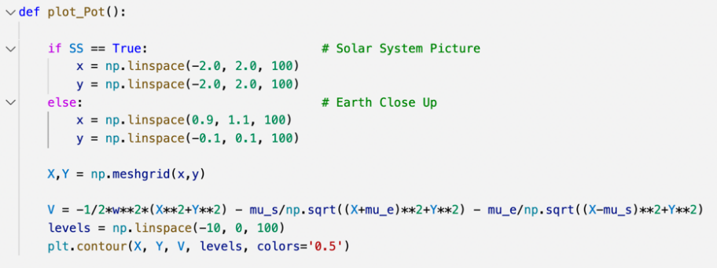
Figure 3.1: Effective Potential Field Plot
Then, in the -dimensional rotating frame with the potential field visualized, the trajectory of satellites on the five Lagrange points will be simulated to verify theoretical prediction and to provide a reference for further simulation. First, a vectorized system of ODE (directly referring to the equation of motion in Section 2.2) will be defined to describe the motion. When the satellite is in state (a four-element vector with components of horizontal displacement, vertical displacement, horizontal velocity, and vertical velocity), the change-of-state vector (a four-element vector with components of horizontal velocity, vertical velocity, horizontal acceleration, vertical acceleration) will be obtained from this ODE. Note that the angular frequency of the rotating frame will be normalized to one.
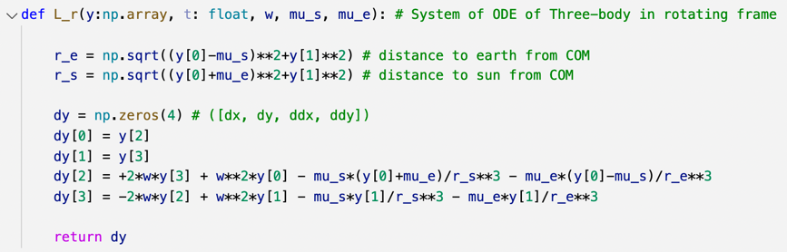
Figure 3.2: ODE of Motion of Satellite in Rotating Frame
Next, function 'odeint’ from module scipy.integrate will be utilized to simulate the trajectory. The ‘odeint’ function is a numerical integrator that can solve vectorized ordinary differential equations (L_r) with an initial condition vector () over a time interval (tlist). The relative error tolerance of this numerical integration will be set to a lower-than-default , yielding significantly more accurate results.
Figure 3.3: Solution of Satellite Trajectory ODE
Using the same structure of code, the trajectory of the three objects in the regular static frame will also be simulated. The vectorized system of ODE will have differential terms: moving bodies, each with components (horizontal velocity, vertical velocity, horizontal acceleration, and vertical acceleration). While the Sun and the Earth will only subject to the gravitational attraction of each other, the satellite will be subject to those of both. Note that the angle terms of acceleration will always be phase-shifted by relative to its positional angle to the center of mass.
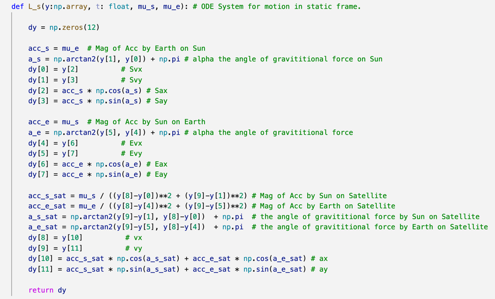
Figure 3.4: ODE of Three-Body Motion in Static Frame
With the origin of the frame at the center of mass of the system, initially, the Sun and the Earth will have no vertical displacement and horizontal velocity but respectively have horizontal displacement of and and vertical velocity of and . The initial displacement of the satellite will be set near different Lagrange points, with the angle of initial velocity shifted relative to displacement. The trajectory of all objects will be solved simultaneously using again the odeint function.
Computational models are inevitably subject to the accumulation of numerical errors, just as how real-world three-body systems are unavoidably disturbed by external perturbations. These two types of disturbance are indistinguishable in our simulations. To test and understand the imprecision of the model, error analysis will be performed to analyze perturbation in orbits from expectation due to computational imprecision and real-world disturbances together, allowing future simultaneous correction of both. To perform error analysis, this simulation will examine the conservation of energy, linear momentum, and angular momentum of the three-body system in the static frame.
First, a function to calculate the total kinetic energy, total gravitational potential energy, and total energy of the system will be defined. The function will be applied for every moment in the simulation to obtain the energies as functions of time. The Virial Theorem will also be verified by demonstrating how total kinetic energy and half the total potential energy sum to zero.
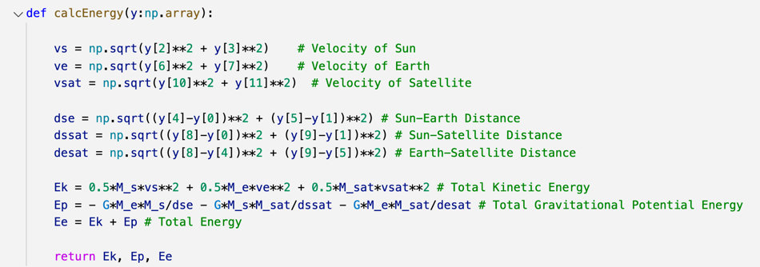
Figure 3.5: Conservation of Energy as Error Analysis
Second, a function to calculate total horizontal and vertical linear momentum will be defined. The magnitude of linear momentum, being a conserved property, is then calculated for each moment in the simulation.
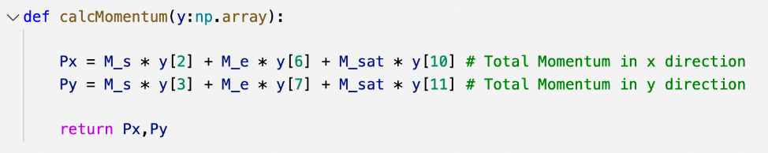
Figure 3.6: Conservation of Linear Momentum as Error Analysis
Third, a function to calculate the total angular momentum of the system will be defined and applied to calculate the total magnitude of angular momentum for each moment in the simulation.
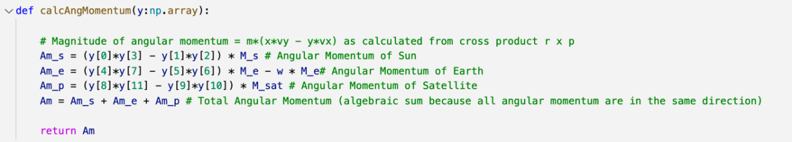
Figure 3.7: Conservation of Angular Momentum as Error Analysis
Given the quantifiable errors in three-body motion, station-keeping of satellites that drifted erroneously off-orbit will be effectively performed by modifying the bodies to the correct state after every time interval (or "section") with constant preset section length during the course of the simulation. To actualize this, a modifyState function will be defined in Figure 3.8.
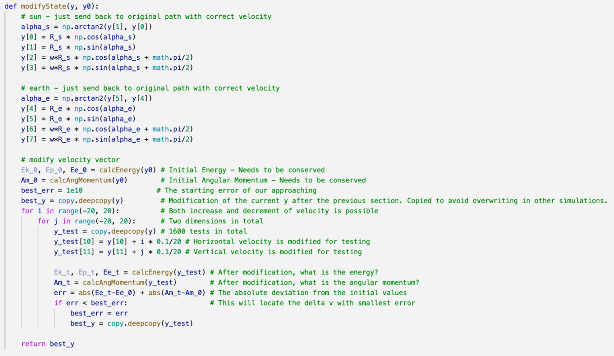
Figure 3.8: State Modification Function to Correct Error in Three-Body Motion
Since the Sun and Earth are not subjects of concern, their state modification will be done by placing them at their original orbit with the correct velocity vector at the instant of modification. On the other hand, as shown in the Figure, the satellite will then be station-kept by undergoing the state modification that best corrects the deviation from initial energy and angular momentum. To be exact, test change of horizontal and vertical velocity in range will be performed, and the vector eventually chosen will be the one that makes conserved properties of the modified state have the least absolute deviation from their initial values.
Next, tests will be performed to examine orbital stability over time. To be specific, drift radius error (deviation of the satellite from the correct radius of trajectory from center of mass) will be simulated as a function of time under small initial disturbances. The simulation result can also be used to check the time needed for an arbitrary pre-set deviation from the expected radius to increase by a factor of (-folding time) and to examine how stability (manifested as the quickness of deviation from the expected path) changes as mass ratio and initial disturbances change in different Lagrange points.
The next set of experiments will examine how the mass ratio of the two dominant bodies impacts the stability of the five Lagrange point orbits. This can be regarded as an extensional study of the circular restricted three-body problem to mass ratios that are greatly less than the celestial values, which can provide further reference to the problem. The simulation will be iterated for mass ratios from to , and the recorded -folding times will be plotted as functions of mass ratio.
The final set of experiments will examine the impact of initial disturbance on the time for the satellite to escape a certain escape radius from the expected orbit, in this case being that with an escape radius of (a great value considering the normalized units). The two types of initial disturbance examined are displacement () and velocity () disturbance on the positive x-direction. The ranges of independent variable, x_dis_list and u_dis_list, are respectively and . The dependent variable, escape time, will be measured by for-iteration that breaks when the satellite’s radius is greater than the escape radius. Note that only initial disturbances on the positive -direction and -direction are considered because the thruster can only be placed on the side of the sunshield due to temperature requirements, which means any escaping in the direction opposite to the Sun will be irreparable [22].
The simulations are then run with various parameters, and the results are presented correspondingly as follows. Keep in mind that time unit days.
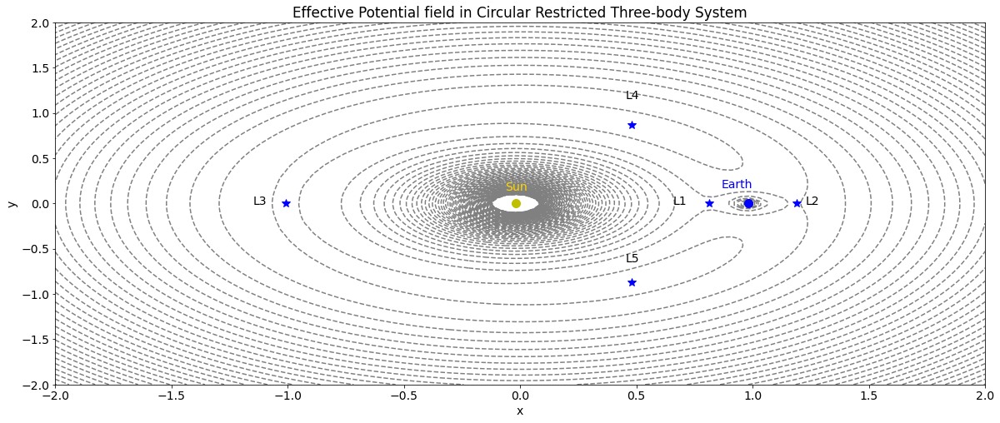
Figure 4.1 Potential Field of Circular Three-Body System in Rotating Field
Figure 4.1 shows the potential field contour plot with theoretical positions of Lagrange points annotated in a circular restricted three-body system when the mass ratio of the dominant bodies is set at to be demonstrative. The gravitational field is strongest near the Sun and the Earth, and all Lagrange points lie at points with zero potential gradient. It can be interpreted from the graph that L1, L2, and L3 are at potential saddles while L4 and L5 are at maxima of flat potential plateaus.
The accuracy of the model can also be tested by zooming in to examine the orbit of a spacecraft near Earth. As shown in Figure 4.2, a spacecraft can achieve stable periodic orbiting around the Earth.
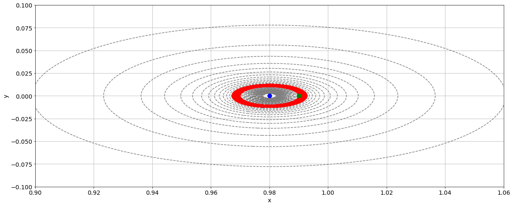
Figure 4.2: Stable Orbit of Spacecraft Around the Earth in 500 Time Units
The simulations are then run in a three-body potential field with the actual Sun-Earth mass ratio, the satellite starting exactly at each of the five Lagrange points, and the initial position marked by the green dot. As exemplified by the case of L3 in Figure 4.3, the analytically calculated positions of Lagrange points in fact allow objects on it to stay still in a co-rotating frame, verifying the theoretical results.
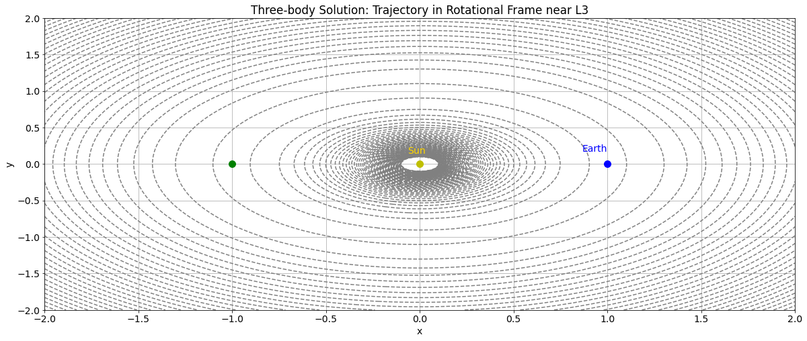
Figure 4.3: Analytical Results Verified: Satellite Exactly on Lagrange points for 1000 Time Units
It is important to note that, despite no manually-inputted initial disturbance, L1 and L2, being extremely unstable Lagrange points, can also demonstrate instability because computational imprecision itself can cause wandering off, and this effect will be discussed and solved later in this section.
On the other hand, L3, L4, and L5 can still stay stable under tolerable initial disturbance. If the disturbance is relatively great, such as disturbance in vertical displacement as shown in Figure 4.4, then the satellite will wander off from the point as well.
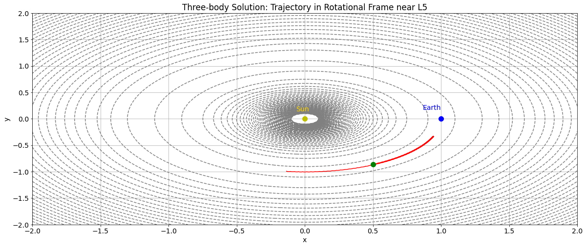
Figure 4.4: Initial Disturbance Causes Satellite Near L5 to Wander Off in 500 Time Units
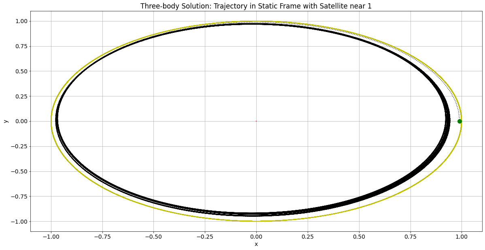
Figure 4.5: Trajectory of Satellite Near L1 in Static Frame over 1000 Time Units
Figure 4.5 demonstrates the trajectory of the three bodies in the static frame with the actual Sun-Earth mass ratio. The center represents the Sun, the yellow line represents the orbit of the Earth, and the black line represents the trajectory of the satellite. It is observable that the satellite quickly deviates from its original radius of trajectory and escapes from L1, which should have a constant radius as represented by the distance between the green dot and the center of the graph. The satellite also wanders in and out in its orbit, as demonstrated by the apparent width of the black orbit. Simulation of the orbital trajectory of satellites near L2 and L3, the two other unstable orbits, reveals similar results.
On the other hand, the orbits of L4 and L5 are clearly more stable, which corresponds to the stability-related theoretical predictions. For example, in the case of L4 in Figure 4.6, the satellite orbits nearly perfectly at its original trajectory, making its orbit coincide with that of Earth in the graph as expected.
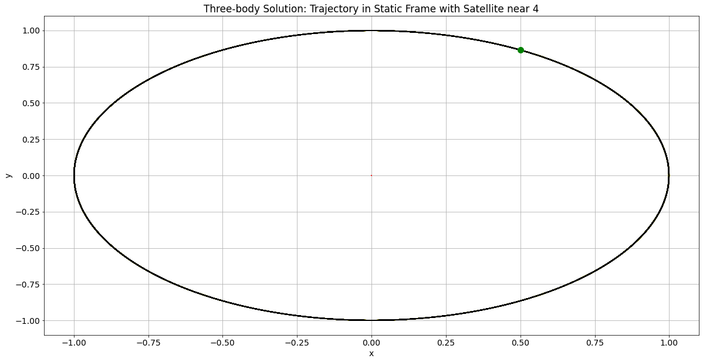
Figure 4.6: Trajectory of Satellite Near L4 in Static Frame over 1000 Time Units
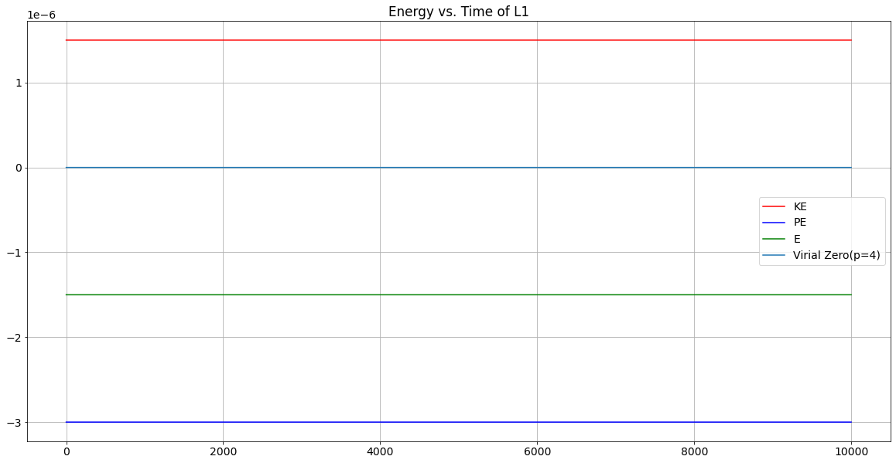
Figure 4.7: Energy Conservation of L1-Orbit Three-Body System
All simulations are accurate in terms of the conservation of energy over each step of the simulation. Given no collision, the initial total kinetic energy, initial total gravitational potential energy, and initial total energy are conserved throughout the -time-unit interval as shown in Figure 4.7. The energy of the system also satisfies the Virial Theorem of , which further proves its accuracy as a simulation of the physical system. With L1 demonstrating high accuracy in energy conservation, it’s also easily obtainable that all other simulation demonstrates conservation of energy to a high extent.
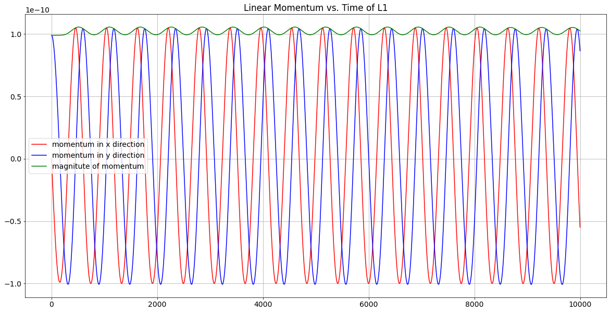
Figure 4.8: Linear Momentum of L1-Orbit Three-Body System
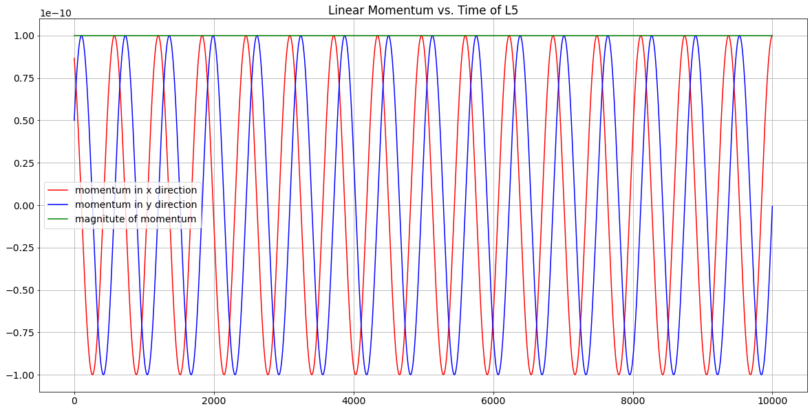
Figure 4.9: Linear Momentum of L5-Orbit Three-Body System
However, for linear momentum conservation verification, the extent of error is distinguished between stable and unstable Lagrange points. As exemplified in Figure 4.8, the unstable Lagrange orbits cannot conserve the initial total magnitude of linear momentum; instead, as exemplified in Figure 4.9, the stable Lagrange orbits show no fluctuation and conserves linear momentum precisely.
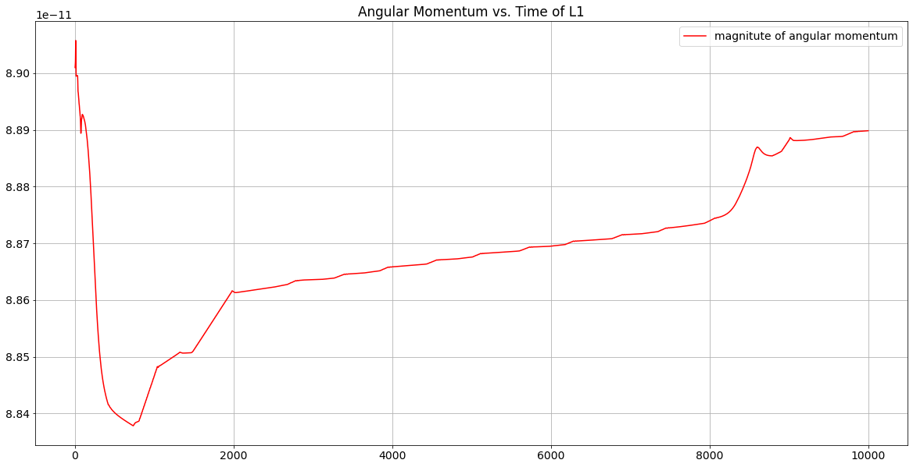
Figure 4.10: Angular Momentum of L1-Orbit Three-Body System
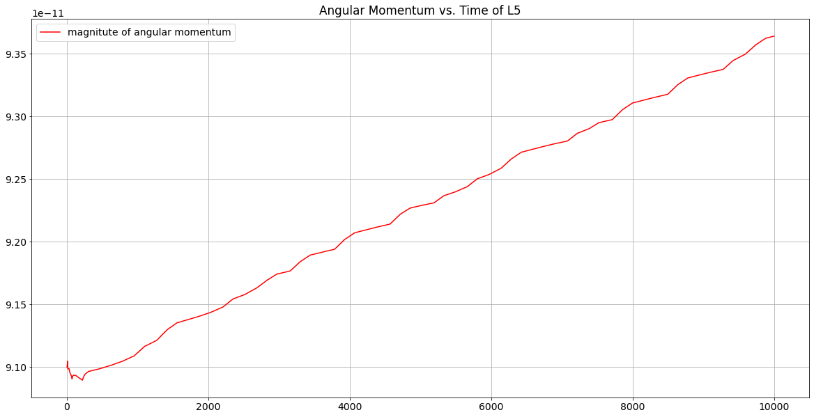
Figure 4.11: Angular Momentum of L1-Orbit Three-Body System
Finally, inaccuracy of the unmodified simulation is exposed in the verification of angular momentum. Angular momentum is conserved for neither stable nor unstable Lagrange point orbits: in the time units concerned, the magnitude of angular momentum fluctuates with no specific pattern in the L1-orbit system and starts to increase nearly linearly in the L5-orbit system. The aforementioned imprecision demonstrates the need for state modification by all orbiting satellites.
As shown in Figure 4.12, the simulation is run over time units with steps in total and with state modification every steps.
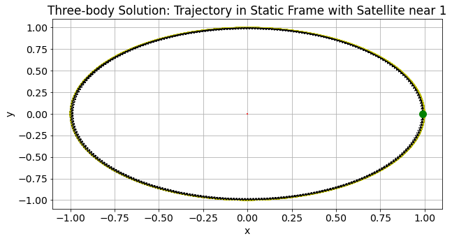
Figure 4.12: Satellite Orbit Near L1 with Station-Keeping
The station-keeping is effective and successful because the satellite orbits around its expected orbits instead of wandering into other paths. Figure 4.13, Figure 4.14, and Figure 4.15 demonstrate the conservation of energy, linear momentum, and angular momentum in the system for each step of the simulation. It is notable that the conservation of linear and angular momentum achieved significant improvement: the magnitude of linear momentum virtually stops fluctuating, and the fluctuation of angular momentum reduces to orders of magnitude less.
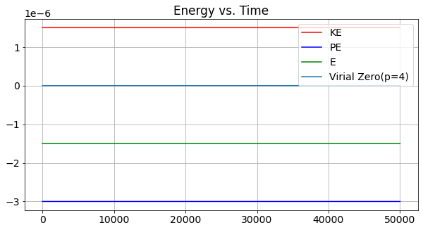
Figure 4.13: Energy Conservation of L1-Orbit Three-Body System with Station-Keeping
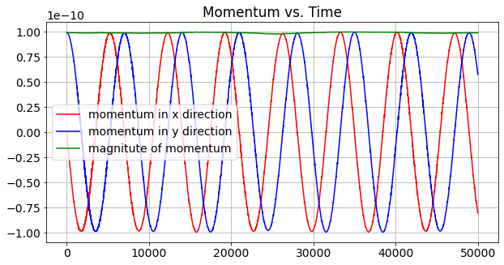
Figure 4.14: Linear Momentum Conservation of L1-Orbit Three-Body System with Station-Keeping
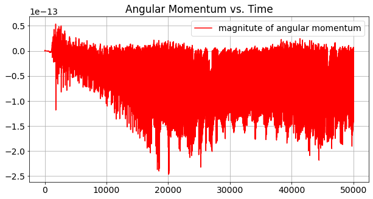
Figure 4.15: Angular Momentum Conservation of L1-Orbit Three-Body System with Station-Keeping
With both unmodified and modified simulations developed, results related to orbital stability can then be obtained.
L1 and L2
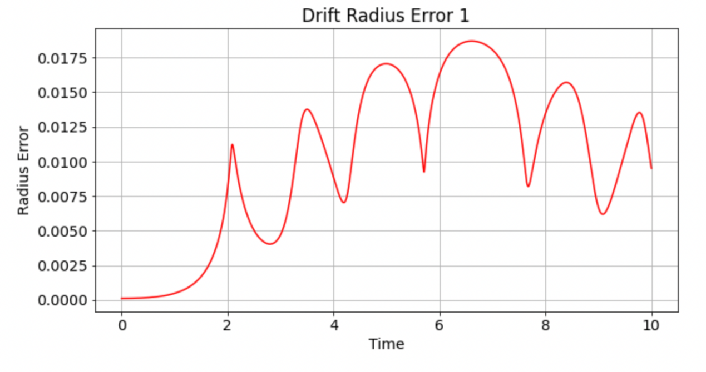
Figure 4.16: Drift from Expected Radius vs. Time (L1 Orbit, Actual Mass Ratio)
Figure 4.16 demonstrates the wandering-off process of a satellite over a period of time from L1 orbit in the unmodified simulation, given an initial displacement disturbance of . The error here doesn’t mean calculational imprecision but is a term for the deviation from expected Lagrange orbital. The errors periodically fluctuate because of the asymmetric nature of the deviated orbit observable in Figure 4.5. The errors accumulate due to the inherent instability of the orbit and then decrease due to the still-existing binding nature of the system under small disturbance. Table 4.1 records the time needed for the initial perturbation to fold into different times of from the initial value, which strongly fits to the theoretically predicted time units from Table 2.1 (which correspond to ~ days). Note that the first -folding doesn’t fit the -time-unit prediction, possibly due to the fact that the perturbation is overly small and therefore takes relatively more time to -fold once.
Table 4.2 records the -folding time results for L2 orbit with an initial disturbance times bigger. The disturbance never achieves -fold or -fold because the orbit never collapses such that the satellite can escape too far away. However, with the initial perturbation increased by a factor of , both the -folding time and the -folding time correspond to the -time-unit theoretical prediction.
| 1.5811581158115813 | |
|---|---|
| 1.9441944194419443 | |
| 2.2532253225322534 | |
| -1 | |
| -1 |
L3
For L3 orbit, the drift radius error still accumulates with time as in Figure 4.17, but the scale is decreased to due to increased stability. As time progresses, however, the bound periodic trend emerges again, as shown in Figure 5.1 in the Discussion.
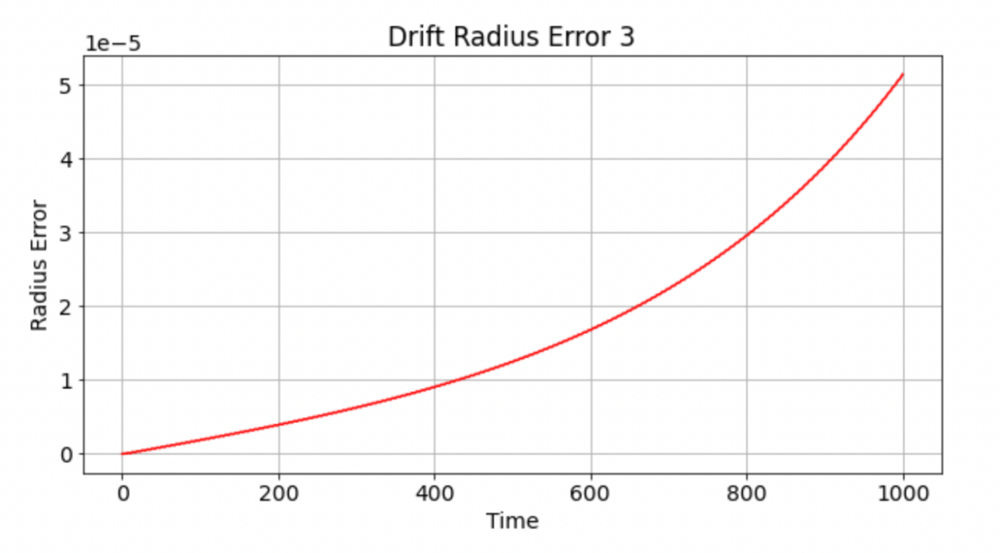
Figure 4.17: Drift from Expected Radius vs. Time (L3 Orbit, Actual Mass Ratio)
As shown in Table 4.3, with the relative stability of the L3 orbit, even a perturbation cannot e-fold twice in time units. However, the -folding time indeed closely fits the -folding time predicted in Table 2.1 (which corresponds to years).
| 428.042804280428 | |
|---|---|
| 771.077107710771 | |
| 1132.113211321132 | |
| 1496.1496149614961 | |
| 1856.185618561856 |
L4 and L5
For L5 (and L4) orbits with a mass ratio above the threshold of stability ( in this case), as shown in Figure 4.18, the satellite can stably stay in orbit in the order of instead of drifting away as in the case of L3 orbit, even if the initial disturbance is as large as . The initial disturbance -folds after time units (~ years) but never can fold anymore.
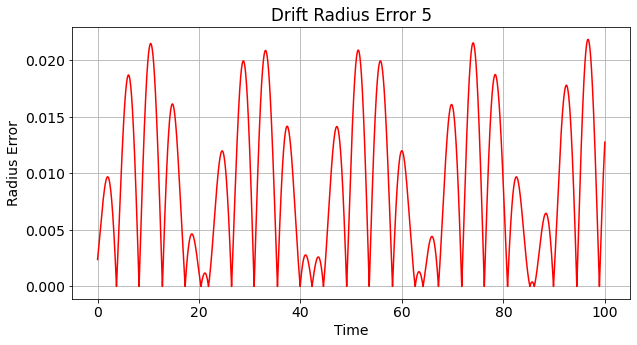
Figure 4.18: Drift from Expected Radius vs. Time (L5 Orbit, Mass Ratio = 25)
Figure 4.19 demonstrates the positive relationship between -folding time and Sun-Earth mass ratio for L1 orbit. The trend is the same for the L2 orbit.
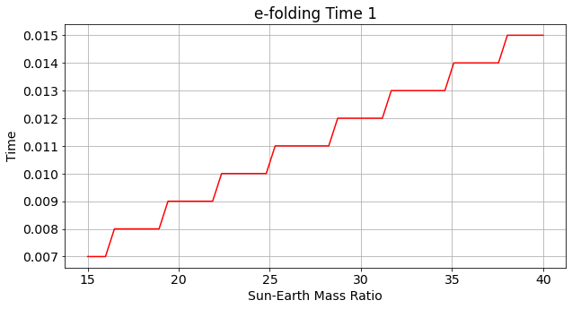
Figure 4.19: e-Folding Time of 0.00001 Initial Disturbance of L1 Orbit vs. Sun-Earth Mass Ratio
Figure 4.20 demonstrates the same relationship for L3 orbit, which is not stepwise but shows the same trend as Figure 4.19. The red line represents the time for the initial disturbance to fold by a factor of , whereas the blue lines represent the time for the -folded disturbance to fold by again; both are manifestations of stability.
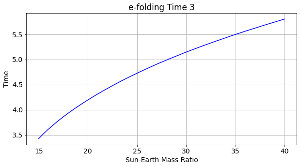
Figure 4.20: e-Folding Time of 0.0001 Initial Disturbance of L3 Orbit vs. Sun-Earth Mass Ratio
For L4 and L5, as shown in Figure 4.21, the trend is interestingly different. Below the threshold of stability, disturbance -folds with a time interval of approximately time units, which is the same as predicted in Section 4.5. However, above the threshold, the orbit is immediately stabilized, giving negative -folding time which computationally symbolizes the inability to escape even by a factor of .
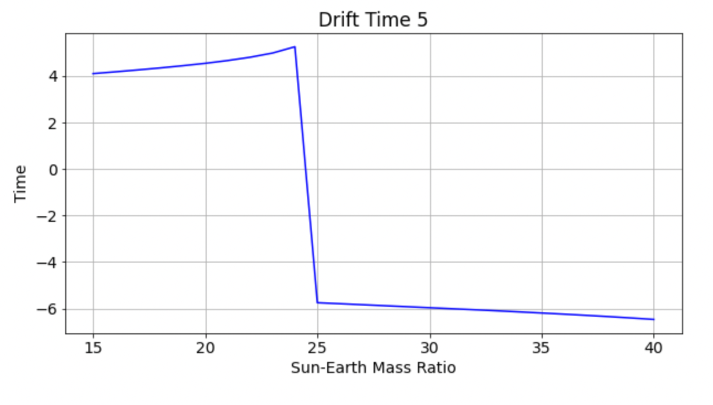
Figure 4.21: e-Folding Time of 0.0001 Initial Disturbance of L5 Orbit vs. Sun-Earth Mass Ratio
Finally, as shown in Figure 4.22 and Figure 4.23, as the initial disturbance in positive and direction increases, the escape time for an escape radius decreases. Given sufficient initial disturbance, the third object can escape from Lagrange point orbit almost immediately.
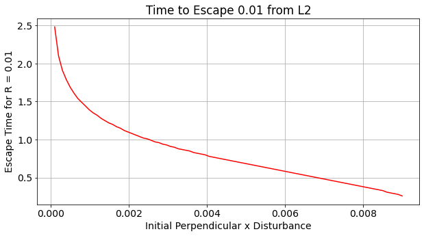
Figure 4.22: Escape Time of 0.01 Escape Radius vs. Initial Disturbance on x Disturbance
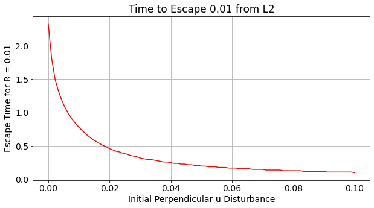
Figure 4.23: Escape Time of 0.01 Escape Radius vs. Initial Disturbance on u Disturbance
This section discusses the results from Section 4, links the output of each simulation together, and provides further exploration of the topic.
The coordinates of Lagrange points are verifiable in the rotating-frame simulation. Given no initial disturbance, a satellite can stay on L3, L4, and L5 virtually indefinitely (at least for Time Units or more than years). However, satellite tends to wander off L1 and L2 despite no initial disturbance due to computational imprecision that is magnified by the unstable nature of their orbits, and the trajectory of the satellite would be visible in the rotating frame usually after time units - the -folding time of L1 and L2.
Such numerical imprecision and disturbance accumulation are manifested by the non-conservation of linear and angular momentum during the course of the simulation, which can be corrected by the state modification algorithm in Section 3.4. Given a relatively short period of time considered (such as tens of time units), state modification every steps can effectively keep satellites in their orbits, and state modification every steps as in Section 4.4 can achieve near-perfect station-keeping and error elimination.
Given an initial disturbance, all satellites around unstable Lagrange points tend to drift away from their orbit as time elapses, with -folding time close to theoretical prediction. However, due to the binding nature of the orbit, if the initial disturbance is not sufficient, the satellite periodically re-approaches the original orbit. For example, for the case of L3 with initial disturbance in Figure 5.1, the satellite first drifts far away from the orbit but eventually returns after almost time units (~ years).
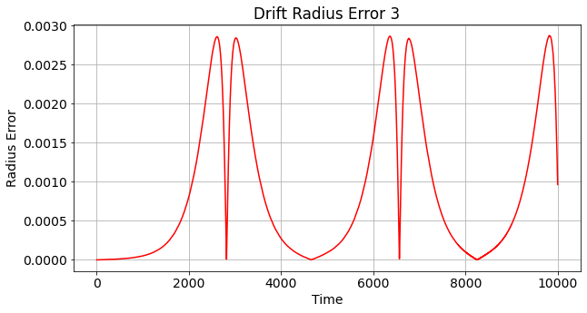
Figure 5.1: Drift from Expected Radius vs. Time (L3 Orbit, Actual Mass Ratio)
To effectively tackle such accumulation of disturbance, the station-keeping algorithm can be applied, increasing the -folding time under the same initial disturbance for every mass ratio, as shown in Figure 5.2.
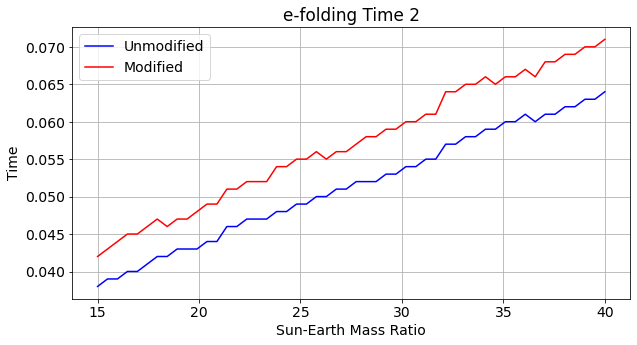
Figure 5.2: State Modification Increases e-Folding Time for Different Mass Ratios
One important factor that impacts orbital stability is the mass ratio of the dominant bodies. For unstable Lagrange points, increasing the mass ratio enhances orbital stability as reflected by the increment of -folding time of a small initial disturbance. For stable Lagrange points, all mass ratios above the threshold generate stable orbits where the -folding time of a small initial disturbance is infinite, but as the mass ratio decreases under the threshold, -folding time becomes finite and decreases. For example, with being the initial disturbance of a satellite near L5 with an unstable mass ratio of , the drifting-away process is graphed in Figure 5.3 and the -folding times to different powers of e are tabled in Table 5.1.
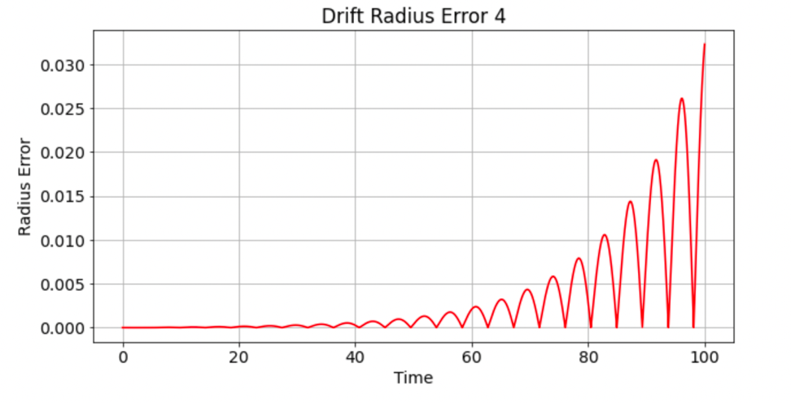
Figure 5.3: Drift from Expected Radius vs. Time (L5 Orbit, Mass Ratio = 24)
| 16.1016101610161 | |
|---|---|
| 29.272927292729275 | |
| 46.424642464246425 | |
| 59.8959895989599 | |
| 73.45734573457347 |
Another important factor that impacts orbital stability is the initial disturbance vector. This paper explores the effect of initial displacement and velocity disturbance in the -direction on orbital stability, revealing that as disturbance of either type increases from zero, the escape time falls quickly and approaches zero, destabilizing the satellite's orbit. For instance, Figure 5.4 illustrates the disordered trajectory of a satellite near L5 with an unstable initial displacement disturbance of .
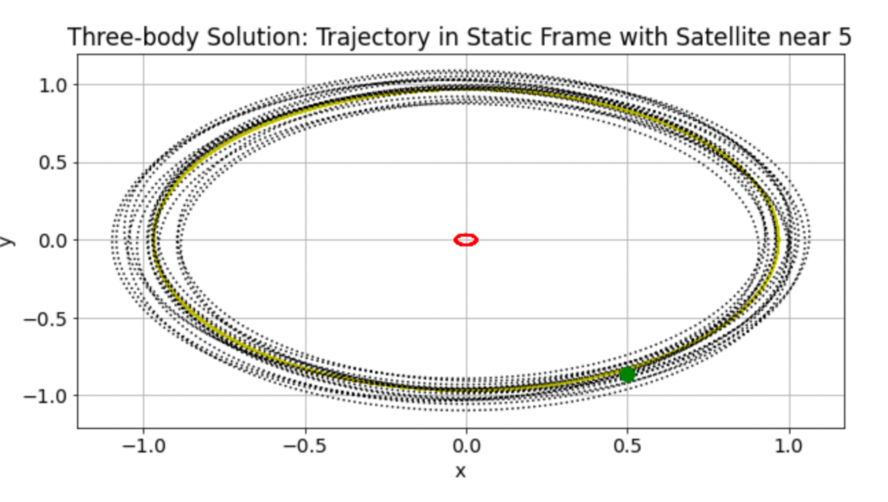
Figure 5.4: Satellite Motion Near L5 (Initial Displacement Disturbance = 0.03)
The results from the numerical integrator construction and experimentation in this paper have various future implications. The calculation of error evolution with respect to time provides a clearer understanding of the process of all circular restricted three-body problems. Moreover, the visualization of third-body motion in both rotating and static frames can be used for modeling three-body motion with different parameters. Furthermore, the experiment about the interrelationship between orbital stability, mass ratio, and initial perturbation provides a novel understanding of the motion of any third body over a period of time with consideration of specific conditions (such as instability in the positive -direction). Finally, the state modification algorithm can be used for precise modeling of station-keeping of any third object such as operating spacecrafts like JWST.
After accounting for the coplanar circular restricted three-body problem, it is natural to remove some constraints so as to generalize our study. Actual binary star systems have two stars that correspond to the two dominant bodies and also planets whose mass is negligible and each one of which can be regarded as the third body. In most such a system, the two stars form a binary orbit, and the third body usually orbit around a central body, typically being the dominant body with greater mass. After the constraints of circularity and coplanarity are removed, we are interested in the evolution of the orbit of the third body, which we referentially named Pandora.
To study such generalized motion, we use the widely-used astrophysical numerical integrator MERCURY which is based on the Fortran algorithm. Our simulation is set to progress with a time step of days and an accuracy parameter of . Our simulation accounts for collision with the radius of the central body being and accounts for escapes with an ejection radius of The output units are set in years. Iteration is expressed in asteroidal coordinates and we primarily focus on the planetary orbit’s semi-major axis, orbital eccentricity, and inclination angle with respect to binary orbit.
The initial eccentricity of the binary orbit is increased from to with a step size of . The initial inclination angle between the binary orbit is controlled to be zero. The mass ratio between the two dominant bodies is controlled to be . The semi-major axis ratio between the binary orbit and the planetary orbit is controlled to be .
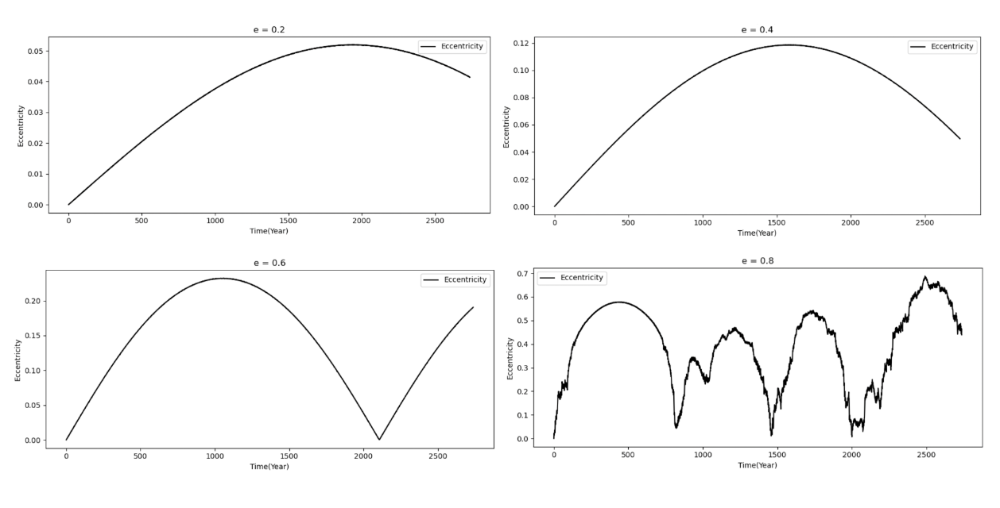
Figure 6.1: Eccentricity of Planetary Orbit Induced from Eccentricity of Binary Orbit in 2739 years
When the binary orbit is set with an initial eccentricity, a non-zero eccentricity is induced in the planetary orbit due to a change in the direction of the gravitational attractions. The eccentricity in the planetary orbit indeed originated from the non-zero binary eccentricity because when the latter is zero, the planet still orbits circularly as time progresses (a horizontal line). In a moderate range of binary eccentricity, the planetary eccentricity evolves periodically. As the binary eccentricity increases, the eccentricity of the planetary orbit is induced more drastically (higher peak value and shorter period). Finally, when the binary system exhibits a more-than-moderate eccentricity, the induced planetary eccentricity becomes quasi-periodic and irregular due to large fluctuations in gravitational attraction.
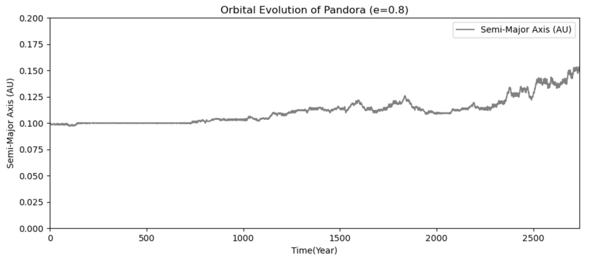
Figure 6.2: Fluctuation in Planetary Semi-major Axis due to Excessive Eccentricity in 2739 years
For all eccentricities, the inclination angle between the binary and the planetary orbit remains to be zero, which is trivial because the system is stable in the normal direction of the coplanar surface. However, whereas the time-evolution of the planetary semi-major axis is a horizontal line for binary eccentricity up to , deviation and fluctuation emerged as binary eccentricity boosted to , as shown in Figure 6.2. This shows that excessive eccentricity can provide enough imbalance of gravitational attraction so as to disturb the stability of planetary orbit.
When the ratio of the binary semi-major axis and the planetary semi-major axis is decreased, the disturbance and induction from binary eccentricity are magnified. Given a binary eccentricity of , when the semi-major axis ratio is decreased to , the planetary orbit first displays an irregularly fluctuating quasi-periodicity and collapses due to collision after around years of running. This is because the lower semi-major axis ratio represents more frequent and complex encounter scenarios to both dominant bodies, which makes the systems to be more sensitive and unstable, as shown in Figure 6.3.
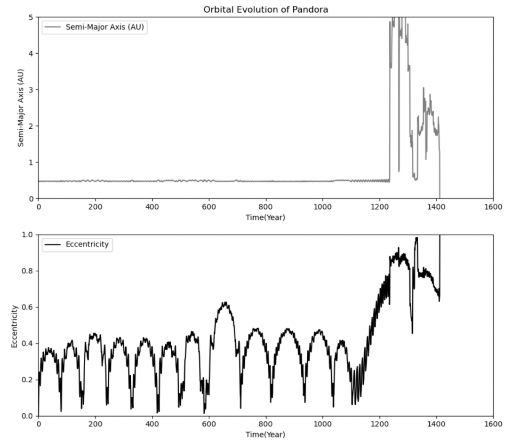
Figure 6.3: Increased Semi-Major Axis Ratio Magnifies the Effect of Eccentricity (collapsed after around 1400 years)
The instability of decreased semi-major axis ratio is prominent in high eccentricity conditions, too. For an initial binary eccentricity of , the system collapses after a mere years under a semi-major axis ratio of , but survives robustly under a semi-major axis ratio of , as shown in Figure 6.3.
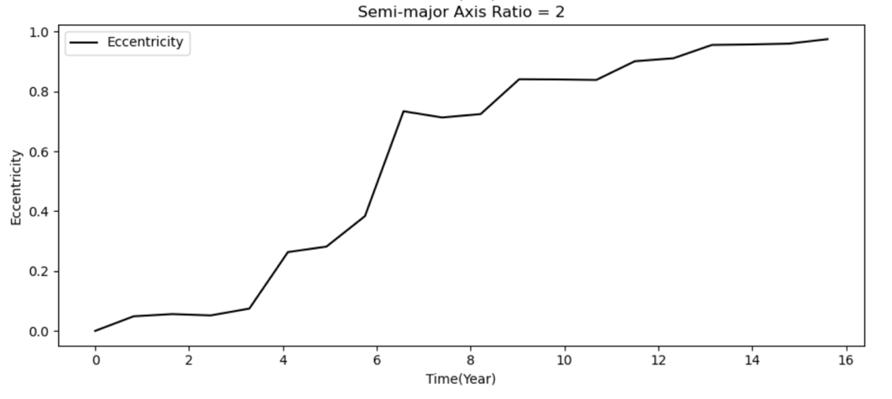
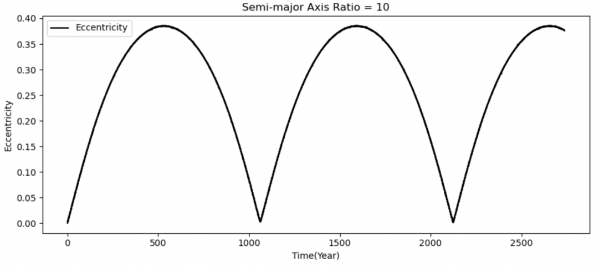
Figure 6.4: Increased Semi-Major Axis Ratio Increases Orbital Stability
Now, the initial binary eccentricity is set to zero and our research focuses on the inclination angle's effect alone. The mass ratio and semi-major axis ratio are still and .
As shown in Figures 6.5, 6.6, and 6.7, the impact of the initial inclination angle between binary orbital and planetary orbital is roughly symmetrical about .
Both the and cases show a small-amplitude fluctuation of planetary eccentricity above zero, which is accompanied by similarly-high-frequency and small-amplitude fluctuation of inclination angle that extends strictly below its original value. This shows how inclination can induce eccentricity as well.
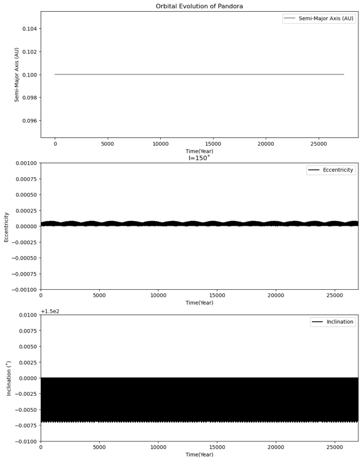
Figure 6.5: Evolution of Planetary Orbit with Initial Inclination of 30˚ and 150˚ for 27397 years.
Both the and cases show periodic peaking behaviors in planetary eccentricity and inclination, which strictly correspond to each other's tread. The trend remains constant for a long period and drastically emerges at regular intervals. However, the period for is approximately years shorter than that for , demonstrating that the symmetry is not perfect due to the different directions of the angular momentum generated from inclination.
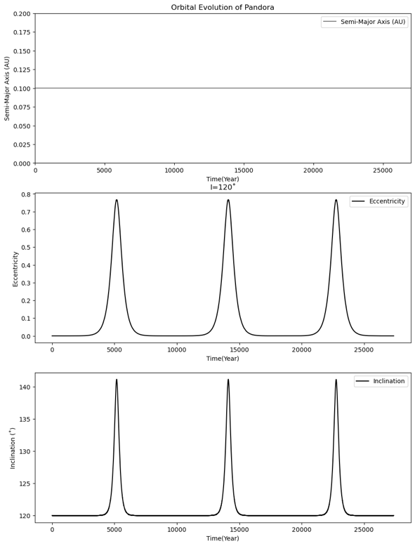
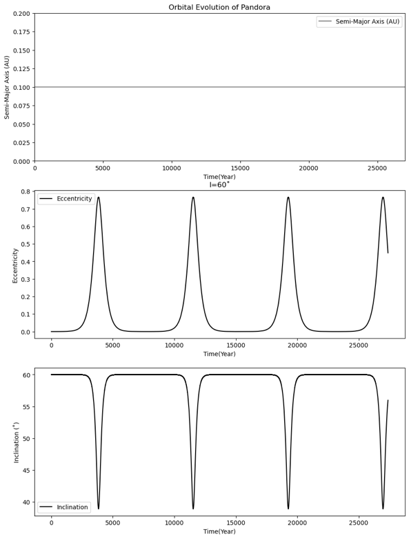
Figure 6.6: Evolution of Planetary Orbit with Initial Inclination of 60˚ and 120˚ for 27397 years. The e-I trend correspondence is inverse for I=60˚ but direct for I=120˚, in a way that eccentricity can be regarded to move in the opposite direction with , which will be explained in Section 6.3.
Finally, the case collapses shortly after years because the completely perpendicular orbits destabilize the system.
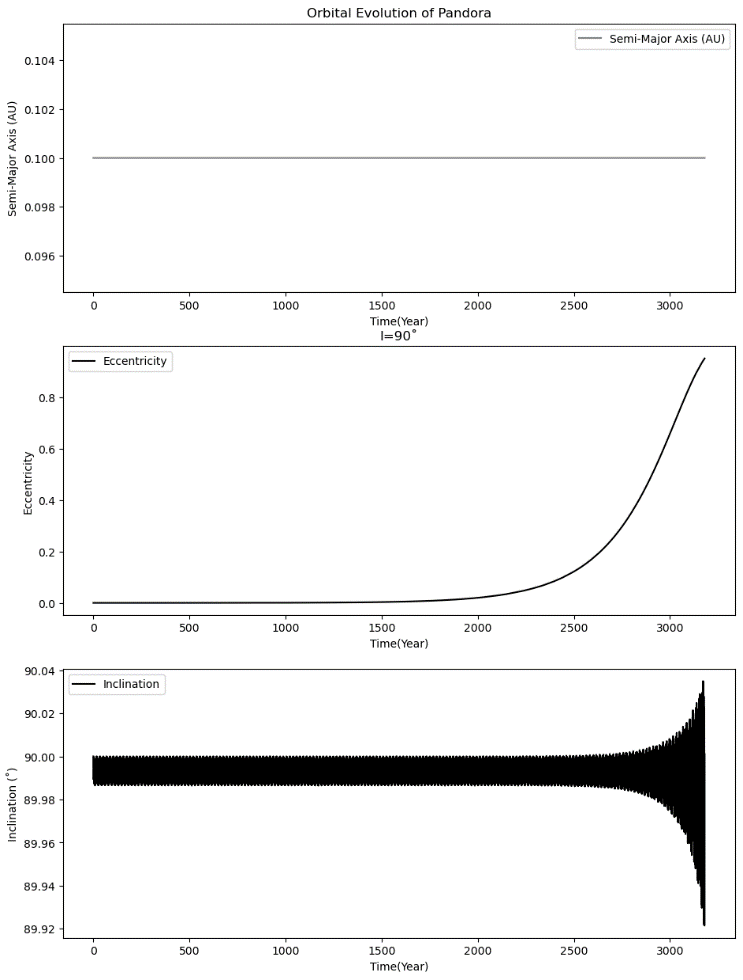
Figure 6.7: Evolution of Planetary Orbit with Initial Inclination of 90˚
Finally, systems with both initial binary eccentricity and initial inclination angle are studied. The mass ratio and semi-major axis ratio are still controlled to be and . As shown in Figure 6.8, both eccentricity-induced large periodic behavior and the inclination-induced short-oscillation are observable, combining with each other and further decreasing each other's period under mutual interaction.
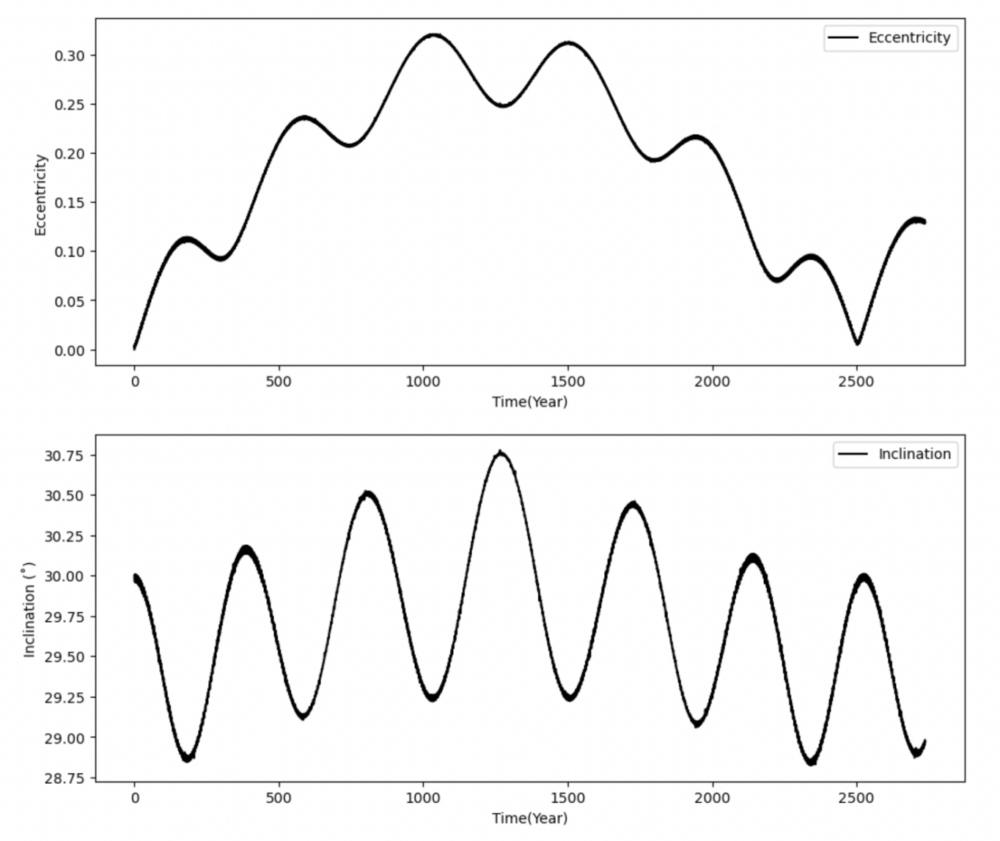
Figure 6.8: Evolution of Three-body System with Both Initial Eccentricity and Inclination
It is observed that, while the semi-major axis is constant over time, eccentricity and inclination angle show opposite trends in evolution when the initial planetary orbit inclination is 60˚. However, as shown in Figure 6.6 of Section 6.2, when the inclination is 120˚, the trends in evolution are not opposite but in the same direction. To understand this, we can draw an analogy on the formality of Kozai resonance, in which asteroids, under the simultaneous effect of Jupiter and the Sun, show no secular evolution of semi-major axis but have the quantity
(15)
to remain constant [24]. For Kozai resonance this reflects specifically the conservation of the third Delaunay momentum, but for our case, it reflects the general idea of momentum conservation that can be used to understand the relationship between planetary eccentricity and inclination. Traditional studies rarely discuss the scenario of counterrotation where , but in our case with covered, should be used to understand the scenario because cannot be negative. This way, when , decreases when increases, and when , increases when increases, corresponding to our calculation results.
In search and discussion of the potential settlement of human civilization and the existence of intelligent beings, the stability of climate and temperature conditions is a crucial factor. To be specific, the existence of liquid water is fundamental to the habitability of exoplanets, but considering that the universe has a large amount of water molecules such as in comets that could be brought to exoplanets through collision and that planets live long enough to wait for bringing of water molecules, it is the preservation instead of origin of liquid water that is crucial. This requires the temperature of the planet to be stable in an interval that would neither boil water into water vapor that might escape through the atmosphere nor condense water into ice that is not useful for the production and reproduction of lives.
Just as the evolution of eccentricity of Earth's orbit and obliquity in the solar system drives Ice Ages and Interglacial Periods in Milanković Cycles, the average surface temperature of exoplanets is a function of semi-major axis, eccentricity, and angle of inclination of planetary orbit. Therefore, greater fluctuation in such parameters would lead to greater instability in climate and temperature.
Most binary systems exhibit non-zero eccentricity and angle of inclination, whose variations are mutually inducing. This implies that most binary systems cannot support a stable and habitable climate. To verify and exemplify this, we obtained relevant orbital data from exoplanet catalogs of binary star systems and utilized stellar temperature and radius data from NASA Exoplanet Archive to estimate the maximum equilibrium average surface temperature of the exoplanets from the following equation, which is rearranged from the equality between the incoming black body radiation from the central star and the emitted black body radiation from the planet, taking reflection into account as well [25] [26].
(16)
Here and are the surface temperature and radius of the central star, is the planetary semi-major axis, and is the planet’s albedo. More than a hundred binary systems are analyzed, and, among those with valid eccentricity data, HD 20782 b and HD 125612 b stand out to have of and . However, for HD 20782 b, the high planetary orbit eccentricity (0.97) and low dominant body mass ratio (1.19) induce irregular fluctuation in the semi-major axis, as shown in Figure 6.9. On the other hand, HD 125612 b shows a more regular periodic semi-major axis fluctuation, but still varies in an approximately-30%-of-baseline range, as shown in Figure 6.10.
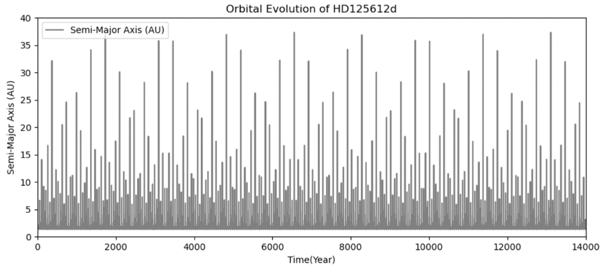
Figure 6.9: Evolution of Orbit of HD 20782 b
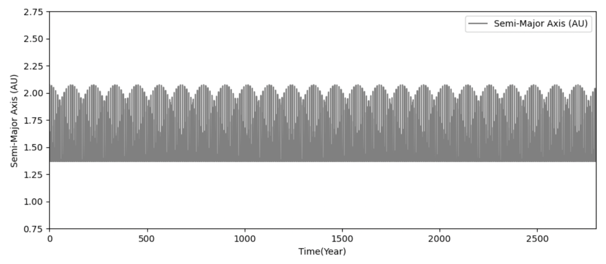
Figure 6.10: Evolution of Orbit of HD 125612 b
However, for these two cases, the planetary eccentricity and inclination are constant over time even under a 60˚ initial inclination angle. These invariabilities are presumably due to the extremely high semi-major axis ratios that are up to . Nevertheless, the great variability in the planetary semi-major axis as in these two cases, and the great variability in planetary eccentricity and inclination angle as in other cases still makes most binary system exoplanets have unstable climates and be inhabitable. In the search for habitable exoplanets in binary systems, one should look for those with low binary and planetary eccentricity and inclination angle but with a high mass ratio and semi-major axis ratio.
The circular restricted three-body problem describes a dynamic astrophysical scenario that is crucial in areas from the operation of artificial spacecrafts to the clustering of celestial bodies, and its generalization provides essential insights into the variability and habitability of exoplanets in binary star systems. Based on theories of coordinates and stabilities of Lagrange points as well as equations of motion from Newtonian mechanics, this paper first constructs an original numerical integrator to simulate circular restricted three-body motion in both rotating and static frames and calculate conserved properties and drift radius to analyze errors and evolutions over time. Then, a state-modification algorithm is developed, achieving modeling of effective station-keeping. Next, Lagrange orbital stabilities are examined as a function of the mass ratio of dominant bodies and as a function of initial perturbations in an unstable direction, yielding a positive relationship in the former and a negative relationship in the latter and providing novel results. Finally, MERCURY is used for the generalization of the three-body problem into non-circular and non-coplanar systems, with mutual interaction and evolution of semi-major axis, eccentricity, and angle of inclination studied. It is concluded that habitable exoplanets are more likely to be found in binary systems with low binary and planetary orbital eccentricity and inclination but with high semi-major axis ratio and dominant body mass ratio. Future work could continue to focus on the generalized N-body secular evolution in the solar system and simulate the balance of delta-v consumption and orbital stability.
McMillan, S. (2022). Computational Physics II. Drexel.edu. http://www.physics.drexel.edu/~steve/Courses/Comp_Phys/Physics-305/index.html
Poincaré, H. “Sur Le Problème Des Trois Corps et Les Équations de La Dynamique.” Acta, vol. 13, no. 1-2, 1890.
de Almeida Junior, A. K., & de Almeida Prado, A. F. B. (2022). Comparisons between the circular restricted three-body and bi-circular four body problems for transfers between the two smaller primaries. Scientific Reports, 12(1). https://doi.org/10.1038/s41598-022-08046-x
Westra, D. (2017). Lagrangian Points. https://www.mat.univie.ac.at/~westra/lagrangepoints.pdf
Weisstein, E. (2022). Lagrange Points. Wolfram.com; Wolfram Research, Inc. https://scienceworld.wolfram.com/physics/LagrangePoints.html
Cornish, N. (1998). The Lagrange Points. https://map.gsfc.nasa.gov/ContentMedia/lagrange.pdf
NASA. (2018). What is a Lagrange Point? | NASA Solar System Exploration. NASA Solar System Exploration. https://solarsystem.nasa.gov/resources/754/what-is-a-lagrange-point/
Valtonen, MAURI, and Hannu Karttunen. The Three-Body Problem. Cambridge, Uk ; New York, Cambridge University Press, 2006.
NASA. (2022). Solar and Heliospheric Observatory Homepage. Nasa.gov. https://soho.nascom.nasa.gov/
Caltech. (2016). Advanced Composition Explorer (ACE) Home Page. Caltech.edu. https://izw1.caltech.edu/ACE/
NOAA. (2015). DSCOVR: Deep Space Climate Observatory. NESDIS. https://www.nesdis.noaa.gov/current-satellite-missions/currently-flying/dscovr-deep-space-climate-observatory
ESA. (2022). Gaia overview. Esa.int. https://www.esa.int/Science_Exploration/Space_Science/Gaia_overview
Kramer, H. (2021). Spektr-RG/SRG - Satellite Missions - eoPortal Directory. Eoportal.org. https://directory.eoportal.org/web/eoportal/satellite-missions/s/spektrg-srg
Dichmann, D. J., Alberding, C. M., & Yu, W. H. (2014, May 5). Stationkeeping Monte Carlo Simulation for the James Webb Space Telescope. Nasa.gov. https://ntrs.nasa.gov/citations/20140007519
NASA. (2022). Orbit - Webb/NASA. Nasa.gov. https://www.jwst.nasa.gov/content/about/orbit.html
STScI. (2017, May 17). JWST Momentum Management - JWST User Documentation. Stsci.edu. https://jwst-docs.stsci.edu/jwst-observatory-hardware/jwst-momentum-management
Bartels, M. (2022, June 8). James Webb Space Telescope hit by micrometeoroid just months into flight. Space.com; Space. https://www.space.com/james-webb-space-telescope-suffers-micrometeoroid-impacts
Fisher, A., & NASA. (2022, May 10). Incredibly Sharp Webb Space Telescope Test Images Hint at New Possibilities for Science. SciTechDaily. https://scitechdaily.com/incredibly-sharp-webb-space-telescope-test-images-hint-at-new-possibilities-for-science/
Paul Scott Anderson. (2017, February 7). NASA’s OSIRIS-REx Spacecraft to Search for Trojan Asteroids Near Earth - AmericaSpace. AmericaSpace - for Space Explorers. https://www.americaspace.com/2017/02/06/nasas-osiris-rex-spacecraft-to-search-for-trojan-asteroids-near-earth/
Dahle, M., Hugdal, H., Ånex, H., & Berg, P. (2018). Lagrange Points. Numfys.net.https://nbviewer.org/urls/www.numfys.net/media/notebooks/lagrange_points.ipynb
Greenspan, T. (2014). Stability of the Lagrange Points, L 4 and L 5. http://pi.math.cornell.edu/~templier/junior/final_paper/Thomas_Greenspan-Stability_of_Lagrange_points.pdf
Brown, J., Petersen, J., Villac, B., & Yu, W. (n.d.). SEASONAL VARIATIONS OF THE JAMES WEBB SPACE TELESCOPE ORBITAL DYNAMICS. Retrieved July 2, 2022, from https://ntrs.nasa.gov/api/citations/20150017756/downloads/20150017756.pdf
Nave, R. (2022). Lagrange Points of the Earth-Moon System. Gsu.edu. http://hyperphysics.phy-astr.gsu.edu/hbase/Mechanics/lagpt.html
Murray, Carl D, and Stanley F Dermott. Solar System Dynamics. Cambridge University Press, 13 Feb. 2000, p. 316.
Schwarz, R. (2022, May). Catalogue of Exoplanets in Binary Star Systems. Univie.ac.at. https://adg.univie.ac.at/schwarz/multiple.html
California Institute of Technology. (2023). NASA Exoplanet Archive. Caltech.edu. https://exoplanetarchive.ipac.caltech.edu/
Acknowledgement
The project in this paper on coplanar circular restricted three-body is inspired by the time when the James Webb Space Telescope was about to arrive at the Lagrange point of Earth and to start its stabler and relatively safer orbiting. Then, inspired by the popular movie Avatar and science fiction The Three-Body Problem, I was intrigued and felt obliged to extend my study to non-circular and non-coplanar three-body scenarios so as to provide insights and solid results on the stability of evolution of planetary orbits in actual and more general star systems in the universe.
Although participating as a team of one person, I received valuable support from many. I would pay great appreciation to my guidance teacher, Feng Xiaoqin, who helped me to check the validity of my theoretical derivation. She is my physics teacher at school. As a doctor who specializes in chaotic systems, her insights and confirmation on my theoretical deduction of stability analysis made me a lot more confident. I also appreciate her guiding me in terms of the writing of my paper, specifically clarifying the structure of method-results correspondence. I would also thank Professor Andrew Haas at New York university, my teacher at the Pioneer Program on computational physics, for affirming my topic selection, teaching me fundamental error analysis techniques in computational physics, and inspiring me to conduct experiments in static frame instead of rotating frame.
A.1 Equation of Motion in Rotating Frame
In the co-rotating frame illustrated in Figure 2.1, Newton’s Law of Gravitation of the two dominant bodies gives
(A1)
(A2)
Therefore, the frame co-rotating with the dominant bodies has an angular frequency
(A3)
In a static frame, the linear velocity of an object is given by
(A4)
where capital means differential in the static frame and is the static-frame position vector. In a rotating frame, the velocity must account for the rotation of the frame itself as well.
(A5)
where lowercase is differential in the rotating frame. Hence, the acceleration in the rotational frame can be derived
(A6)
Writing out Newton’s Second Law and resolving for (in this paper the derivation focuses on -direction, but the derivation is similar for ) gives
(A7)
Computing each part of the equation above and changing the representation yields
(A8)
Referring back to Figure 2.1,
(A9)
which translates the above equation into
(A10)
Performing the same derivation on the -direction completes a system of ODE to be solved over an interval of time for tracking the trajectory of satellites as the third object in the rotating frame [6].
(A11)
A.2 Location of the Lagrange Points
Now, to locate the Lagrange points, the points with zero gradient of the effective potential in the rotating frame must be found. The potential function is as follows [6].
(A12)
Keeping in mind that
(A13)
Then, the negative effective potential gradient is given by
(A14)
By the same procedure, the gradient for the -direction can be obtained [20].
(A15)
Solving for zero effective potential gradient from the above two equations gives the coordinates of the Lagrange points [20]. In this case, the Earth is on the positive -axis and the Sun is on the negative -axis.
(A16)
(A17)
(A18)
(A19)
(A20)
A.3 Equation of Motion in Static Frame
The acceleration in the and -direction in the static frame is simply the resolution of the gravitational acceleration on the axes. There's a phase difference of between the angle of the position and the angle of the acceleration to the -axis.
(A21)
A.4 Stability Analysis
The eigenvalue of the linearized evolution matrix that describes the motion of satellites near each Lagrange point is solved [21].
For L1 and L2, there is a positive real root,
(A22)
which suggests that L1 is unstable and any small perturbation will grow with an -folding time of , which for the solar system is approximately days [6].
For L3, there’s also a positive real root,
(A23)
which, in the context of the solar system, gives an -folding time of approximately years [6].
Finally, for L4 and L5, the eigenvalues are,
(A24)
(A25)
where . L4 and L5 are stable if all roots are purely imaginary. First, this requires . Since , this condition is always satisfied. Second, this requires , which gives our constraining threshold mass ratio,
(A26)
below which L4 and L5 become unstable Lagrange points [21].